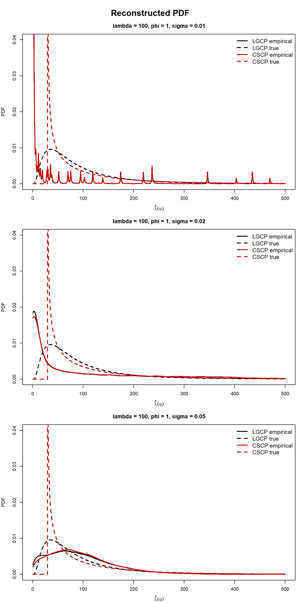
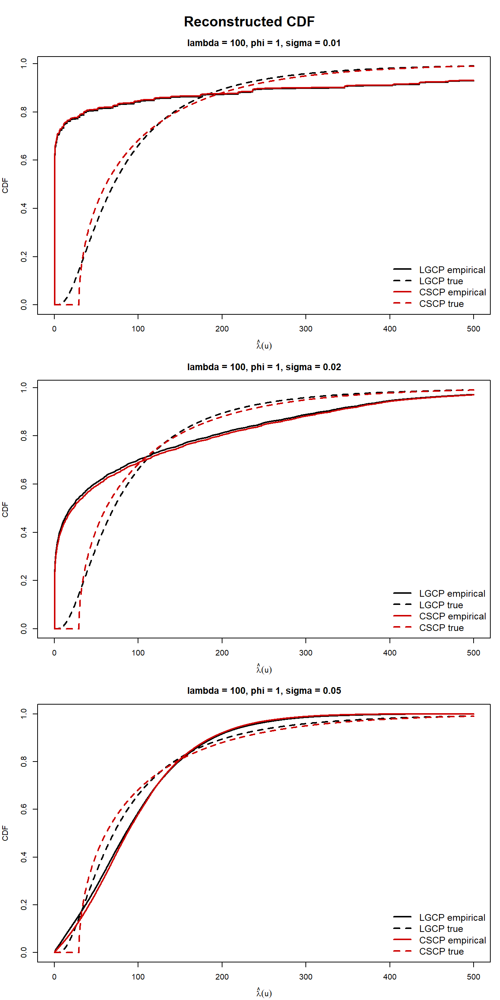
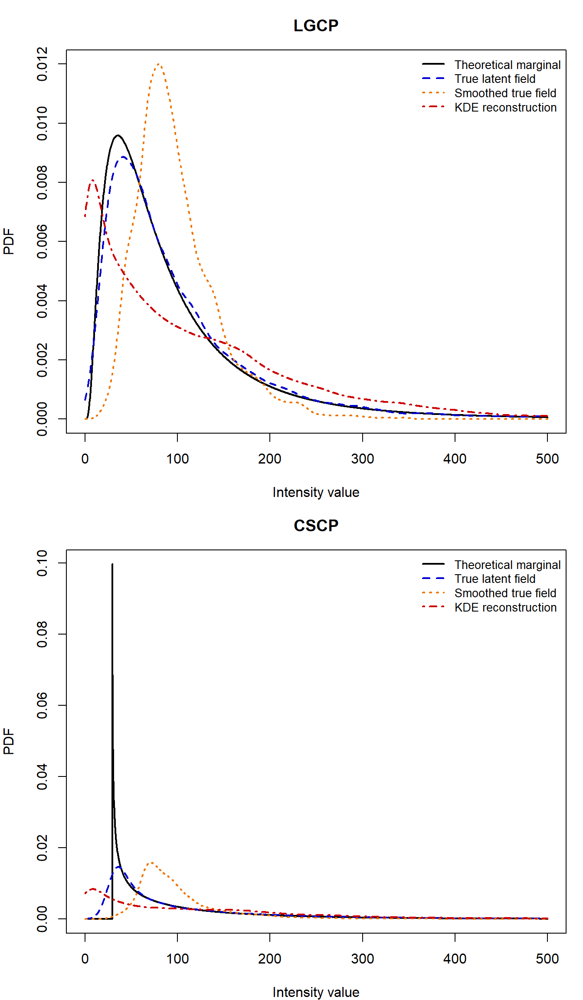
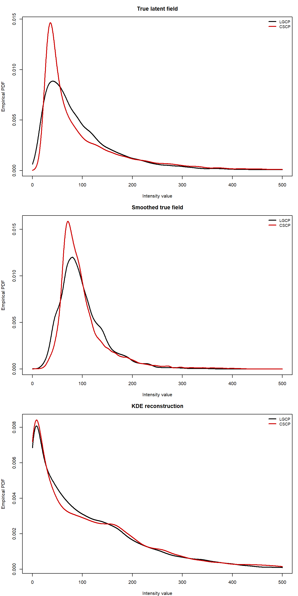
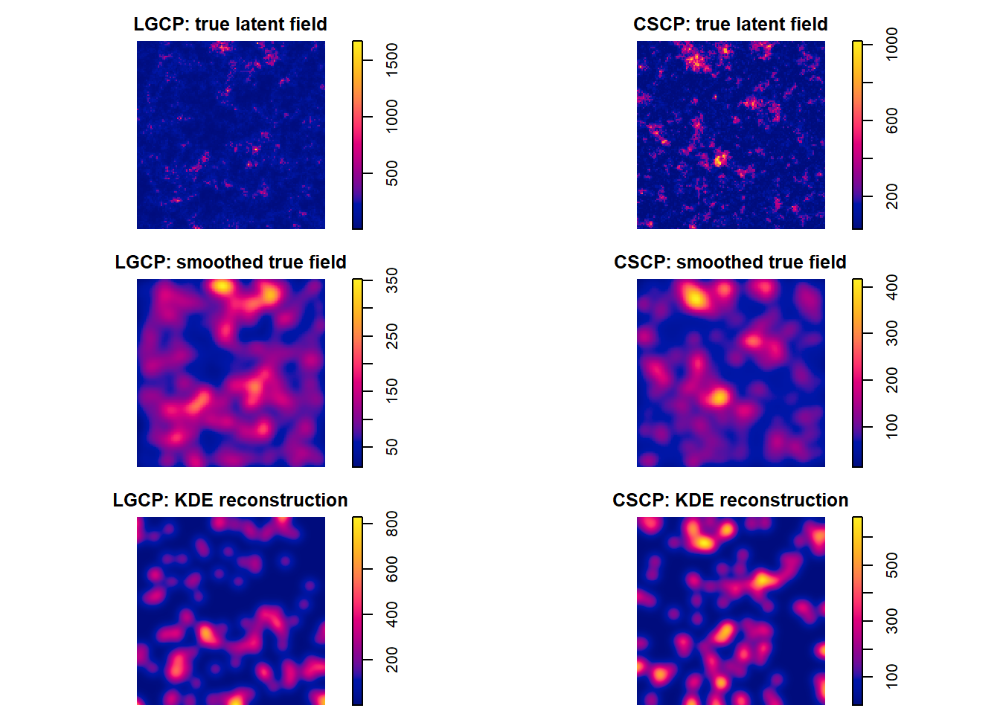

W <- spatstat.geom::owin(c(0, 1), c(0, 1))
lambda_vals <- 100
phi_vals <- c(1)
s_cscp <- 0.05
df <- 1
n_sims <- 20
sigma_kernel_vals <- c(0.01, 0.02, 0.05)
npix <- 256
intensity_grid <- seq(0, 500, length.out = 2000)45 🚧 Recovering marginal intensity differences using KDE
Note
So basic idea for this section is:
We know the marginal distributions are different for the CSCP and LGCP, we saw this in the previous section, by inspecting the CDF and PDFs
We want to investigate whether we can leverage these differences
The most obvious way, is to try to estimate the actual marginal distributions
A naive approach to his, is by use KDE, and then treating each pixel as an independent sample of the marginal distribution. This comes with a number of issues.
Regardless of this, we first try this naively, and find obviously that it does not work well - curves of both LGCP and CSCP are almost identical, and they do a poor job of approximating the TRUE curves.
So in light of this, we try to determine the root cause of the issue. We suspect three potential issues:
Smoothing removing too much information
Spatial dependence between pixels making it so that the pixels are not truly independent samples of the marginal
poisson sampling simply does not leave enough information for the differences to survive after kernel estimation which has the above two issues.
So we address the smoothing concern by looking at the same kernel smooth of the true intensity surface, and then also just the true surface on its own, and compare curves here.
Then following that, we use a “thinning” type of procedure to address the spatial dependence concern. <- axed
Then if after we do both of these, and we still cannot distinguish between the two, then that is solid evidence that KDE based methods will not work well at distinguishing the two processes by attempting to leverage the differences in their marginal distributions.
At which point we address the clear issue: why bother estimating the entire 2d surface, when all we are interested in the marginals… Then queue next section.
Spoiler, next section sucks ahh too, and we get no seperation.
This section investigates whether kernel-based reconstruction of the latent intensity field preserves enough information about the marginal distribution to retain the theoretical differences between LGCP and CSCP models.
We begin by clarifying exactly what we are trying to estimate, and what is actually observable.
45.1 What is the target?
Let \(\Lambda(u)\) denote the latent intensity field of the Cox process. Under stationarity, the theoretical marginal distribution of interest is that of \(\Lambda(u_0)\) for a fixed location \(u_0\).
This is the object studied in the previous section, where we showed that the marginal distributions of LGCP and CSCP models differ.
However, this quantity is not directly observable. From a single realisation of a point pattern, we do not observe \(\Lambda(u)\), but only a set of points generated conditionally on it.
45.2 What do we observe?
Given a point pattern \(X\), we observe only the realised points, not the latent intensity field that generated them. Any attempt to recover information about \(\Lambda(u)\) must therefore proceed indirectly.
45.3 KDE-based reconstruction
To recover the latent structure, we construct a kernel estimate of the intensity surface,
\[ \hat{\lambda}(u) \]
from the observed point pattern.
This provides a smooth reconstruction of the underlying intensity field. We then evaluate \(\hat{\lambda}(u)\) on a fine grid of pixels over the observation window, yielding a collection of values
\[ \{ \hat{\lambda}(u_1), \ldots, \hat{\lambda}(u_m) \} \]
These values are treated as an approximate sample from the marginal distribution.
Why is it not an exact sample of the marginal?
When we using kernel density estimation to reconstruct the latent field, we are introducing several sources sources of distortion:
- The estimator \(\hat{\lambda}(u)\) is a spatially smoothed version of the true intensity field. In particular, each value \(\hat{\lambda}(u)\) is an average of nearby points, rather than the true value \(\Lambda(u)\).
This has the effect of shrinking extreme values and reducing variability, meaning that features of the marginal distribution, such as heavy tails or mass near zero, might be blurred.
Note
So from what I gather, in general KDE kind of “drags” all the actual latent field value towards the mean, as it is averaging over a neighbourhood when estimating each pixels value?
- The values \(\hat{\lambda}(u_1), \ldots, \hat{\lambda}(u_m)\) are obtained from a single reconstructed surface, and nearby pixels share many of the same points in their kernel estimates.
As a result, these values are dependent, and do not form an independent sample from the marginal distribution of \(\Lambda(u)\).
Note
This might not be a problem for locations far enough apart relative to the spatial scale parameter, but is definitely a problem for locations close to each other.
- Lastly, the observed point pattern is itself a random realisation conditional on the latent field \(\Lambda(u)\). Even if \(\Lambda(u)\) were fixed, the observed points would vary due to Poisson randomness.
This variability propagates into \(\hat{\lambda}(u)\), meaning that differences in the reconstructed intensity surface may reflect sampling noise, rather than true differences in the underlying marginal distribution.
So, the goal of this section is not to estimate the true marginal distribution as best as possible, but rather ask:
Does KDE-based reconstruction preserve enough information about the marginal distribution of \(\Lambda(u)\) to distinguish LGCP and CSCP models in practice.
45.4 Interpretation
This setup allows us to investigate the following question:
If two models have different latent marginal intensity distributions, do those differences remain visible after reconstructing the intensity field from a single observed point pattern?
If the answer is yes, KDE-based reconstruction may provide a practical route for distinguishing the models. If not, this suggests that the marginal differences are not easily recoverable from observed data using this approach.
45.5 Initial empirical comparison
In the first instance, we focus on the reconstructed PDF as the primary object of interest, since it most directly reflects shape differences in the marginal distribution. We also examine the reconstructed CDF as a secondary, more stable summary.
45.6 Procedure
For each model and parameter setting \((\lambda, \phi, s)\), we repeat the following steps:
- Simulate a point pattern \(X\).
- Construct a kernel estimate \(\hat{\lambda}(u)\) of the latent intensity.
- Evaluate \(\hat{\lambda}(u)\) on a regular grid over the observation window.
- Treat the resulting pixel values as a proxy sample from the marginal distribution.
- Compute the empirical PDF and CDF of these values.
This procedure is repeated over many simulations, and the resulting curves are averaged pointwise.
Note
For the LGCP, we use the scale parameter matched to the CSCP through the best-fitting second-order relationship. This ensures that the two models have closely matched second-order structure, so that any remaining differences are primarily marginal rather than second-order.
45.7 Sim study setup
Settings used:
Sim functions and helpers:
45.8 Sim study results

Reconstructed CDF (with true CDF lines):

The reconstructed PDFs and CDFs show very little separation between the LGCP and CSCP across the bandwidths considered here, despite the fact that the corresponding theoretical marginal distributions differ.
Varying the bandwidth helps clarify the role of smoothing. Smaller bandwidths retain slightly more irregularity, while larger bandwidths produce visibly smoother curves, but across all three choices the empirical LGCP and CSCP reconstructions remain much closer to one another than the corresponding true marginal curves.
This suggests that the loss of practical distinguishability is not tied to a single arbitrary bandwidth choice. Rather, at least for the range considered here, KDE-based reconstruction does not appear to preserve the theoretical marginal differences clearly enough to provide a useful practical distinction between the two models.
To address this, we next compare the true latent intensity field with its KDE-based reconstruction, in order to isolate where the information is being lost.
Note
There is a lot more I might want to say here looking at he curves.
For instance, we know that true \(\mu = 29.28\) (using cscp_params(s = 0.05, lambda = 100, phi = 1)), so why is there so much mass at 0, when the process should have minimum intensity at 29? <- dumb question
Also maybe I should have included different bandwidths here, to show effect? <- did that now
There is just so many moving parts it feels really difficult to narrow down what we need to show and where. <- almost there
45.9 Where is the information being lost?
The KDE-reconstructed PDFs and CDFs show very little separation between the LGCP and CSCP, despite the fact that their theoretical marginal distributions differ.
This raises a natural question:
At what stage is the marginal information being lost?
To investigate this, we compare four related objects:
- the theoretical marginal PDF / CDF, derived in the previous section,
- the empirical PDF of the realised true latent intensity surface,
- the empirical PDF of a smoothed version of the true latent surface, and
- the empirical PDF of the KDE-reconstructed intensity surface obtained from the observed point pattern.
These comparisons allow us to separate several possible effects. If the realised true surface already looks similar across models, then the issue lies with realisation-level variability rather than reconstruction. If smoothing the true surface substantially reduces the difference, then smoothing itself is a major source of information loss. If the KDE-reconstructed curves are even less separated than the smoothed true curves, then the additional loss must arise from reconstructing the field from Poisson-sampled point data.
In this way, the diagnostic progression
theoretical \(\rightarrow\) true surface \(\rightarrow\) smoothed true surface \(\rightarrow\) KDE reconstruction
provides a systematic way to identify where the marginal signal is being lost.
45.10 Diagnostic setup
For each model, we simulate a single point pattern together with its underlying latent intensity surface. From this, we construct:
- the raw latent intensity image,
- a smoothed version of that image using the same bandwidth as the KDE,
- the KDE reconstruction obtained from the observed point pattern.
For each of these surfaces, we evaluate the image on a fine pixel grid and treat the resulting pixel values as a sample from the corresponding marginal distribution. We then estimate the associated empirical PDF using a univariate kernel density estimate on those pixel values. These are compared with the theoretical marginal PDF.
Helpers:
Code
simulate_pattern <- function(family, W, lambda, phi, s, df = 1) {
family <- match.arg(family, c("LGCP", "CSCP"))
switch(
family,
LGCP = sim_lgcp(W, lambda = lambda, phi = phi, s = s),
CSCP = sim_cscp(W, lambda = lambda, phi = phi, s = s, df = df)
)
}
estimate_intensity_surface <- function(X, sigma = 0.03, npix = 128) {
oldopt <- spatstat.options(npixel = npix)
on.exit(spatstat.options(oldopt), add = TRUE)
spatstat.explore::density.ppp(
X,
sigma = sigma,
at = "pixels",
edge = TRUE,
positive = TRUE
)
}
extract_im_values <- function(im_obj) {
vals <- as.vector(im_obj$v)
vals[is.finite(vals)]
}
smooth_true_intensity_surface <- function(im_obj, sigma, positive = TRUE) {
spatstat.explore::blur(
x = im_obj,
sigma = sigma,
bleed = TRUE,
positive = positive
)
}
pdf_on_grid <- function(values, grid, adjust = 1) {
stats::density(
values,
from = min(grid),
to = max(grid),
n = length(grid),
cut = 0,
adjust = adjust
)$y
}
one_diagnostic_rep <- function(
family,
W,
lambda,
phi,
s_cscp,
df = 1,
sigma_kernel = 0.01,
npix = 512,
intensity_grid = seq(0, 2200, length.out = 5000),
rep = 1
) {
family <- match.arg(family, c("LGCP", "CSCP"))
s_lgcp <- match_lgcp_scale(phi = phi, s_cscp = s_cscp)
s_used <- if (family == "LGCP") s_lgcp else s_cscp
sim_obj <- simulate_pattern(
family = family,
W = W,
lambda = lambda,
phi = phi,
s = s_used,
df = df
)
X <- sim_obj$pp
true_im <- sim_obj$intensity
smooth_true_im <- smooth_true_intensity_surface(
im_obj = true_im,
sigma = sigma_kernel
)
kde_im <- estimate_intensity_surface(
X,
sigma = sigma_kernel,
npix = npix
)
true_vals <- extract_im_values(true_im)
smooth_true_vals <- extract_im_values(smooth_true_im)
kde_vals <- extract_im_values(kde_im)
true_pdf <- if (family == "LGCP") {
dlnorm(
intensity_grid,
meanlog = log(lambda) - 0.5 * log(phi + 1),
sdlog = sqrt(log(phi + 1))
)
} else {
mu <- lambda * (1 - sqrt(phi / 2))
sigma <- sqrt(lambda * sqrt(phi / 2))
ifelse(
intensity_grid < mu,
0,
dchisq((intensity_grid - mu) / sigma^2, df = df) / sigma^2
)
}
curve_df <- bind_rows(
tibble(
family = family,
rep = rep,
lambda = lambda,
phi = phi,
surface = "Theoretical marginal",
x = intensity_grid,
pdf = true_pdf
),
tibble(
family = family,
rep = rep,
lambda = lambda,
phi = phi,
surface = "True latent field",
x = intensity_grid,
pdf = pdf_on_grid(true_vals, intensity_grid)
),
tibble(
family = family,
rep = rep,
lambda = lambda,
phi = phi,
surface = "Smoothed true field",
x = intensity_grid,
pdf = pdf_on_grid(smooth_true_vals, intensity_grid)
),
tibble(
family = family,
rep = rep,
lambda = lambda,
phi = phi,
surface = "KDE reconstruction",
x = intensity_grid,
pdf = pdf_on_grid(kde_vals, intensity_grid)
)
)
list(
curve_df = curve_df,
X = X,
true_im = true_im,
smooth_true_im = smooth_true_im,
kde_im = kde_im
)
}45.11 Running diagnostics
diag_lgcp <- one_diagnostic_rep(
family = "LGCP",
W = W,
lambda = 100,
phi = 1,
s_cscp = s_cscp,
df = df,
sigma_kernel = 0.03,
npix = npix,
intensity_grid = intensity_grid,
rep = 1
)
diag_cscp <- one_diagnostic_rep(
family = "CSCP",
W = W,
lambda = 100,
phi = 1,
s_cscp = s_cscp,
df = df,
sigma_kernel = 0.03,
npix = npix,
intensity_grid = intensity_grid,
rep = 1
)
diag_curve_df <- bind_rows(diag_lgcp$curve_df, diag_cscp$curve_df)Within family progression:

Between family separation:

Surfaces:
par(mfrow = c(3, 2), mar = c(0,0,0,0))
plot(diag_lgcp$true_im, main = "LGCP: true latent field")
plot(diag_cscp$true_im, main = "CSCP: true latent field")
plot(diag_lgcp$smooth_true_im, main = "LGCP: smoothed true field")
plot(diag_cscp$smooth_true_im, main = "CSCP: smoothed true field")
plot(diag_lgcp$kde_im, main = "LGCP: KDE reconstruction")
plot(diag_cscp$kde_im, main = "CSCP: KDE reconstruction")
Important
Mis-spec of the CSCP PDF/CDF??
45.12 Results
The diagnostic comparison reveals a clear pattern.
First, the theoretical marginal PDFs differ between the LGCP and CSCP, as expected from the previous section. This confirms that, at least in principle, the models are distinguishable through their marginal distributions.
Second, when examining the realised true latent intensity surfaces, this difference remains visible, although it is slightly reduced due to variability of the realizations themselves.
Third, smoothing the true latent surface reduces the separation further. In particular, the sharp features of the marginal density are slightly softened, and the two models become (slightly) less visually distinct.
Finally, the KDE-reconstructed PDFs show much less separation between the models. The reconstructed marginal densities are nearly indistinguishable, despite the underlying theoretical differences.
45.13 Interpretation
These results suggest that the loss of marginal information occurs progressively across the reconstruction pipeline.
Smoothing of the latent field contributes to the loss of separation, but does not eliminate it entirely. The remaining loss arises when the intensity surface must be inferred indirectly from a Poisson-sampled point pattern, introducing additional variability and distortion.
In particular, the PDF features that distinguish the two models, such as the behaviour near the lower end of the support and the shape of the upper tail, are difficult to recover in practice. These features are either smoothed away or poorly represented in the observed data, and therefore do not survive the reconstruction process.
It is also worth noting that apparent mass near zero in the KDE-reconstructed CSCP density does not contradict the theoretical lower bound of the CSCP latent intensity. Rather, it reflects the fact that the KDE surface is not a direct sample from the latent intensity, but a noisy and smoothed estimate constructed from finite observed data.
Overall, these diagnostics indicate that while smoothing plays a role in reducing separability, the primary limitation is more fundamental: the marginal distribution of the latent intensity is not readily recoverable from a single observed point pattern using KDE-based reconstruction.
As a secondary check, one may also examine the corresponding CDFs. These tell the same story, but the PDF is the more informative object here, since it shows more directly where the models differ and how those differences are erased by smoothing and reconstruction.